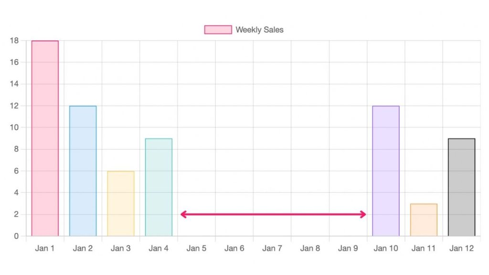
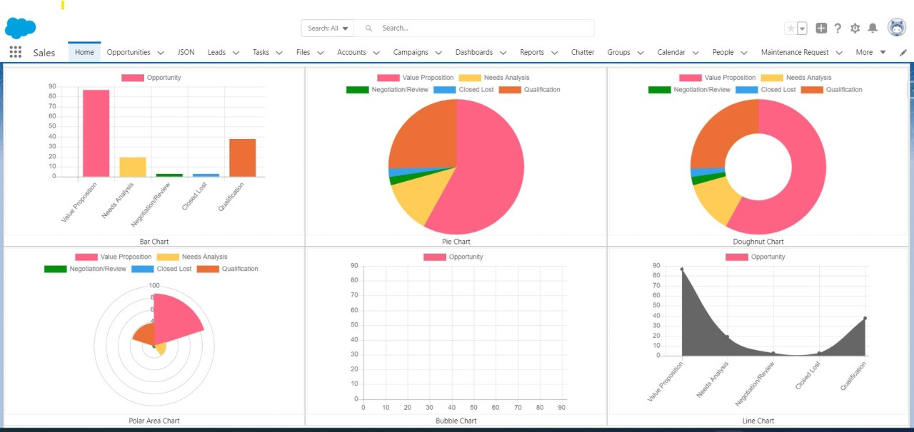

Présentation
Les données sont de plus en plus présentes dans le monde de l’entreprise ou des services. Elles permettent d’enrichir une information, mais servent aussi d’outil de communication.
A partir de jeux de données, cette SAE mobilise les ressources liées à l’analyse de données, à la production graphique, à l’intégration et au développement front et amène les étudiants à :
Analyser des données pour en extraire des indicateurs ou les informations pertinentes
Proposer un site web permettant la visualisation de ces données (dataviz)
Compléter ce site web par la production d’éléments de communication visuelle sur différents supports.
En tant que graphistes ou producteurs de contenus juniors, les étudiants doivent mener un travail d’analyse et d’interprétation d’un jeu de données, une réflexion sur les éléments caractéristiques de ces données et produire des visualisations afin d’appuyer un message de communication.
A travers cette SAé, vous réaliserez des visuels graphiques sur un grand volume de données en utilisant la librairie ChartJS, afin de facilter une meilleure prise de décision. et en apportant une réponse à la question suivante :
Comment concevoir des visualisations de données apportant une information pertinente et conforme à un objectif de communication ?
Exemples de graphiques à réaliser
 {kind=link}
{kind=link}
Important
Thème
Le thème choisi pour cette SAé tourne autour du domaine agricole. Il s’agit plus précisément de ce que l’on nomme le biocontrôle.
1. Critères pédagogiques
Développement Front-end : Création d’interfaces utilisateurs (UI/UX), conception de pages web interactives.
Développement back-end : Conception et mise en place d’une base de données relationnelle.
Création numérique et dispositifs interactifs : Modélisation 3D, production vidéo, création d’images.
2. Pré-requis
Compétences en développement (Front-end)
Conception UI/UX (Ergonomie et interfaces)
Création numérique (modélisation 3D, vidéo)
Conduite de projets
3. Attentes finales de la SAé
Compte rendu sur la conduite de projet : Planification, répartition des tâches, problèmes rencontrés.
Création d’un site Web pour la visualisation des données (Dataviz)
Conception et modélisation d’une base de données relationnelle
Mise en place de la base de données